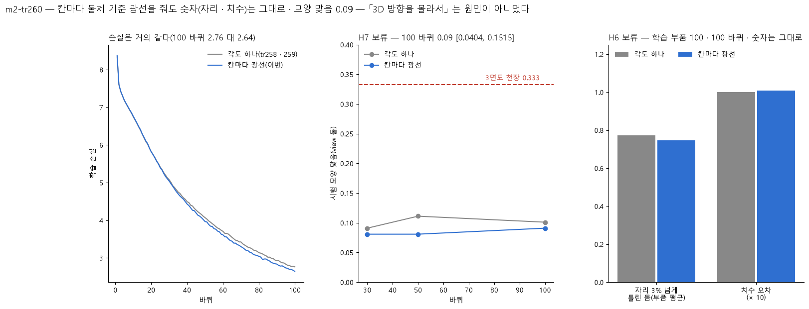

실험 m2_tr0260_h006_광선
목표 G1.2 view 모음 → 파츠별 CAD code(CadQuery · 그 전 「3 면도 → 파츠별 CAD」 · 지금 M2 는 위 · 앞 · 옆 고정 세 장만 받음 → 아무 각도 N 장으로 바꿀 것 · 11-20) · G1 첫 제품 — 피규어 · 메카 사진 여러 장 + 치수 → 숨은선 3 면도 + 파츠별 CAD · G0 임의의 이미지 → CAD 코드 · 빌린 가정 4: 생성기기하 · 정답3D · 시점앎 · 정사영 · 갚는 계획: 정답 view 천장 — m1 의 view 를 넣는 판에서 정답3D · 시점앎을 갚음 · 생성기기하는 원화CAD짝 시험지로 · 정사영은 원근 렌더로 그 뒤(광선 꼴도 원근으로 바꿔야) · 목표 시험지 값: 안 잼 (!)
view 의 칸마다 물체 기준 광선(방향 · 자리)을 주면, m2 가 치수 · 자리 숫자를 배우나?
판정 · H6 보류(학습 부품 자리 3 % 넘는 몸 0.75 · 같은 셈 대조 0.77 — 차 없음) · H7 보류(시험 0.09 · 대조 0.10) — 칸마다 물체 기준 광선을 줘도 숫자는 그대로 · 「망이 3D 방향을 몰라서 숫자를 못 배운다」 는 원인이 아니었음 · 3면도 입력(tr182)도 자리 3 % 넘는 몸 40 ~ 58 % 였음 — 숫자 문제는 view 꼴 이전부터 m2 에 있던 것 · 다음 싼 검증: 자리만 · 치수만 정답으로 바꿔 지어 어느 숫자가 막는지 가름(학습 없음) · 몸 칸 짝짓기는 판 203 에서 이미 봄(+0.03 · 주 원인 아님)
| 가설 | 주장 | 결과 | 근거 |
|---|---|---|---|
| H6 | m2 가 숫자를 못 배운 것은 칸이 3D 어느 방향 · 자리를 보는지 몰라서다 — 칸마다 광선을 주면 배운 부품의 자리를 배운다 | 보류 | 같은 부품 평균 셈 대조 m2-tr259 100 바퀴 0.772 [0.7035, 0.8378] — 차 0.03 · 칸 모음 광선 0.854 대 대조 0.865 · 치수 오차 9.9 % 대 10.0 % · 학습 종류 0.997 · 축 1.0 · 몸 수 0.99 · 시험 자리 0.927 · 치수 11.7 % |
| H7 | 숫자를 배우면 모양도 맞는다 | 보류 | 바퀴별 광선 30 0.081 · 50 0.081 · 100 0.091 · 대조 30 0.091 · 50 0.111 · 100 0.101 · view 하나 0.071 · 0.081 · 각도 20° 0.071 · 45° 0.081 · 학습 100 0.05 · 표면 거리 중앙 30 0.230 · 50 0.205(대조 0.239 · 0.212) |
분석
한 줄로
물음: view 의 칸(8 × 8 토큰)마다 「이 칸이 물체 기준으로 어느 방향 · 어느 자리를 보는지」 를 알려 주면, m2 가 치수와 자리 숫자를 배우나?
답: 배우지 않는다(둘 다 보류 · 대조와 차이 없음). 배운 부품에서 자리가 3 % 넘게 틀린 몸은 0.75 로, 같은 셈의 대조 0.77 과 같다. 시험 모양 맞음도 0.09 로 대조 0.10 과 같다. 앞 실험에서 내가 짐작한 「망이 칸의 3D 방향을 몰라서 숫자를 못 읽는다」 는 원인이 아니었다(적어도 이 꼴로는).
왜 이 실험을 했나
m2-tr259 에서 새 m2 는 100 바퀴까지 배워도 종류 · 축 · 몸 수만 외우고 치수와 자리는 배운 부품에서도 못 맞혔다. 망이 view 마다 각도 하나만 받아서, 칸이 3D 어디를 보는지 모르는 탓이라고 짐작했다. 사용자가 「숫자를 못 배운다는 거는 새로 tr 을 파야겠네」 라고 해서 그 짐작을 확인했다. 우리 목표는 image → view → CAD code 의 뒤쪽, view 모음에서 파츠 CAD code 를 짓는 m2 다.
바꾼 것 하나
각도를 넣는 꼴. 전에는 view 마다 각도 4 숫자를 작은 망에 넣어 64 칸 모두에 같은 값을 더했다. 이번에는 칸마다 6 숫자(시선 방향 3 + 그 칸 가운데가 지나는 자리 3 · 물체 기준 축)를 넣어 칸마다 다른 값을 더한다. 렌더러와 같은 식으로 셈했고 정면(방위 180 · 고도 0)에서 시선이 (0, −1, 0) 인 것을 확인했다. 나머지는 m2-tr258 · 259 와 같다(데이터 · 학습률 · tr182 무게에서 출발 · 100 바퀴 · 시험 99).
결과

| 이번(칸마다 광선) | 대조(각도 하나 · tr258 · 259) | 판정선 | 판정 | |
|---|---|---|---|---|
| H6 배운 부품 자리 3 % 넘게 틀린 몸 | 0.75 [0.67, 0.81] | 0.77 [0.70, 0.84] | 0.60 지지 · 0.80 기각 | 보류 |
| H7 100 바퀴 시험 모양 맞음 | 0.09 [0.04, 0.15] | 0.10 | 0.20 지지 · 0.10 기각 | 보류 |
모양 맞음은 몸 수 · 구멍(위상)이 같고 표면이 5 % 안에 드는 부품 비율이다. 「자리 3 % 넘게 틀린 몸」 은 부품마다 몸 가운데가 부품 크기의 3 % 넘게 어긋난 몸의 비율을 낸 뒤 부품끼리 평균했다.
왜 이렇게 나왔나
확인한 것
- 손실 곡선이 거의 겹친다(100 바퀴 2.64 대 2.76). 30 · 50 · 100 바퀴 시험 모양 맞음 0.08 · 0.08 · 0.09 대 0.09 · 0.11 · 0.10.
- 배운 부품 칸별(100 바퀴): 종류 1.00 · 축 1.00 · 몸 수 0.99 로 외운 것도 같고, 치수 오차 9.9 % 대 10.0 % 로 숫자도 같다.
- 표면 거리 가운데값만 조금 짧다 — 배운 부품 0.13 대 0.17, 시험 0.19 대 0.20. 모양 맞음 기준 0.05 에는 멀다.
- 각도를 20° · 45° 틀리게 넣어도 0.07 · 0.08 로 그대로다. 칸마다 방향을 줘도 망이 그것을 쓰지 않는다.
-
3면도를 넣던 tr182 도 자리 3 % 넘게 틀린 몸이 40 ~ 58 % 였다. 숫자를 못 맞히는 것은 view 꼴을 바꾸기 전부터 m2 에 있던 문제다.
-
몸 칸을 정답과 가장 가깝게 짝짓는 손실(헝가리안)은 판 203 에서 이미 봤다 — 모양 맞음 +0.03 · 주 원인 아님. (처음 이 보고에 다음 후보로 적었다가 고쳤다 — 제 실수.)
- 생성기에서 몸의 자리(상자 가운데)는 「어느 몸의 어느 면에 반쯤 박아 붙나」 와 크기로 정해진다(조립124.짓기).
짐작 (아직 확인 안 함)
- 망은 고르기(종류 · 축 · 몸 수)는 외우는데 절대 좌표 회귀는 못 한다. 자리를 「붙임(어느 몸 · 어느 면)」 이라는 고르기로 내면 배울 수 있다. 단 이 붙임 규칙은 생성기 것이라 실제 부품에는 어긋남(offset)도 내야 한다.
- 칸 하나가 화소 16 개 폭이라 3 %(약 4 화소) 자리를 읽기에 거칠 수 있다.
한계
- 한 번 돌림 · 생성기 부품 11,968 · 학습률 하나.
- 대조 tr259 는 30 바퀴에서 옵티마이저를 새로 시작했고 이번은 이어서 100 바퀴다.
- 광선의 자리는 칸 가운데를 [−1, 1] 로 넣었다(렌더러는 [−0.6, 0.6]) — 상수 배라 첫 층이 흡수하지만 셈이 렌더러와 똑같지는 않다.
- 정사영 · 정답 view 다. 사진 원근 · m1 이 낸 view 는 아직이다.
배운 것과 다음
칸마다 3D 방향을 줘도 숫자는 그대로다. 숫자를 못 배우는 원인은 view 꼴보다 앞, m2 의 출력 · 손실 쪽에 있을 가능성이 크다.
- 싼 검증 먼저(학습 없음): 지금 무게의 출력에서 자리만 정답으로 바꿔 지으면 모양 맞음이 얼마나 오르나 · 치수만 바꾸면 얼마나 오르나 — 어느 숫자가 막는지 가른다.
- 자리가 막으면 자리를 붙임(어느 몸 · 어느 면 고르기)으로 내는 판. 치수가 막으면 치수 쪽(칸 크기 · 읽는 꼴)을 본다.
실험 기록
- 카드 · 광선260.py(자료 · 흐름 · 학습 · 잼 · 재기 · 그림) · 잼.json · 흐름.png · 결과.png · 원본 out/설명/캐드부품/모델260(머리_030 · 050 · 100 · 곡선 · 잼_030 · 050 · 100)
정정 (11-20 · 감사262 · 맥락 없는 서브 에이전트 감사)
- 제 실수 1 — 「망이 각도를 거의 안 쓴다」 는 틀렸다. 각도를 20° · 45° 틀려도 모양 맞음이 같았던 것은 모양 맞음이 0.1 바닥에 붙어 있어서였다. 칸 단위로 재면 방위 +45° 에 자리 출력이 몸당 0.08(3 % 문턱의 2.7 배) 움직이고, +90° 에 축 예측이 19 % 바뀐다. 망은 각도를 쓴다.
- 제 실수 2 — 「3면도 입력(tr182)도 자리 3 % 넘는 몸 40 ~ 58 % 였으니 숫자 문제는 view 꼴 이전부터」 는 틀렸다. 3면도 망은 자리 오차 가운데가 x · y · z 모두 약 0.009(1 화소)이고 L2 0.027 로 3 % 문턱 바로 밑에 몰려 있어 비율만 높게 보였다. view 망은 L2 0.124 로 4.6 배 나쁘다. 좌표별로 보면 view 망은 위아래(z) 자리는 배우고(학습 0.016) 방위에 따라 도는 x · y 만 못 배운다(학습 0.042 · 0.049 · 시험 0.082). 두 view 의 방위 차와도 거의 무관하다(삼각측량을 안 함).
- 코드 · 데이터 버그는 없었다: 그림 ↔ 정답 짝 · 각도(다시 그려 F1 1.000) · 좌표 틀 · 손실 41 칸 · 학습 루프 짝 · 마스크 · 출력 머리 모두 정상. 학습 부품 64 개 외우기에서는 숫자도 0 으로 간다(3,000 스텝 자리 3 % 넘는 몸 0.0).
- 자료: out/설명/캐드부품/감사262/(감사A ~ H .py · json · G_요약.png)